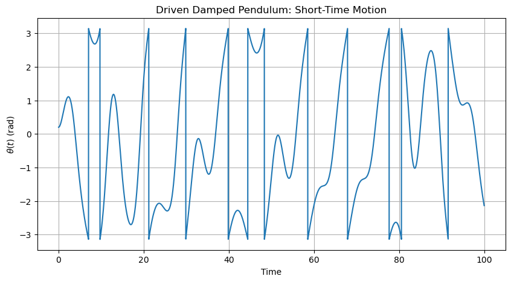
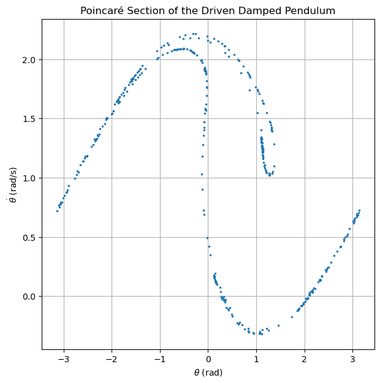

B3.5 Chaos and Sensitive Dependence on Initial Conditions#
B3.5.1 Motivation#
Throughout this module, we have encountered increasingly rich forms of oscillatory behavior.
We began with simple harmonic motion, where the motion is perfectly periodic and completely predictable. We then explored nonlinear oscillators, self-sustained oscillations, limit cycles, and synchronization, discovering how interacting systems can spontaneously organize themselves into coherent patterns.
One might naturally expect that sufficiently complicated systems simply become disordered or random. Surprisingly, however, many nonlinear systems remain governed by completely deterministic equations while exhibiting behavior that appears irregular and unpredictable.
This phenomenon is known as chaos.
Chaos is the irregular behavior of a deterministic system that exhibits extreme sensitivity to its initial conditions.
Although the governing equations are completely deterministic, the long-term behavior may become practically unpredictable.
At first glance, this definition may seem contradictory. If the equations are deterministic, why should the future become unpredictable?
The answer lies in the fact that tiny uncertainties in the initial conditions can grow dramatically with time. Eventually, these small differences become so large that long-term prediction becomes impossible in practice.
Consequently, deterministic systems need not be predictable.
Examples of chaotic systems include:
weather patterns,
planetary motion,
turbulent fluids,
biological populations,
electrical circuits,
the double pendulum.
Chaos should not be confused with randomness.
Chaotic systems obey deterministic equations. Their apparent unpredictability arises from extreme sensitivity to initial conditions rather than from the absence of physical laws.
Example — Weather Prediction
Modern weather forecasts are based on deterministic equations describing atmospheric motion.
Nevertheless, because tiny uncertainties in the current state of the atmosphere grow with time, accurate weather prediction becomes increasingly difficult beyond roughly one or two weeks.
Thus, practical unpredictability can arise even when the governing equations are completely known.
Curiosity
The modern study of chaos originated largely from the work of Edward Lorenz in the 1960s. While studying simplified models of atmospheric convection, Lorenz discovered that extremely small differences in initial conditions could lead to dramatically different outcomes.
This discovery eventually inspired the famous phrase
“Does the flap of a butterfly’s wings in Brazil set off a tornado in Texas?”
Although intended metaphorically, this idea became known as the butterfly effect.
In the next section, we will investigate one of the most famous examples of chaotic motion: the double pendulum.
B3.5.2 The Double Pendulum#
One of the most famous examples of chaotic motion is the double pendulum, consisting of one pendulum attached to the end of another.
Unlike the simple pendulum, which has a single degree of freedom, the double pendulum possesses two angular coordinates,
Consequently, the motion is considerably more complicated and exhibits a rich variety of behaviors.
A double pendulum consists of two pendulums connected in series and possesses two degrees of freedom.
Because the equations of motion are nonlinear and coupled, the system can exhibit both regular and chaotic behavior.
For sufficiently small oscillations, the motion is nearly periodic and can be understood using the normal-mode techniques developed earlier in this module.
As the energy increases, however, the nonlinear coupling between the two pendulums becomes increasingly important. Energy is continually exchanged between the two arms, producing motions that appear highly irregular.
Although the equations remain deterministic, the resulting trajectories may become extremely sensitive to the initial conditions.
Low-Energy Motion#
For small angular displacements,
the equations may be linearized.
The system then behaves similarly to the coupled oscillators studied in Module B2 and exhibits normal modes and periodic motion.
Intermediate Energies#
As the amplitudes increase, nonlinear effects become more pronounced.
The motion remains bounded but becomes increasingly complicated. Energy flows back and forth between the two pendulums, and the trajectories in phase space begin to deviate from simple closed curves.
High Energies#
At sufficiently high energies, the motion becomes chaotic.
The pendulums execute complicated motions that are difficult to predict over long times. Tiny differences in the initial conditions eventually lead to dramatically different trajectories.
Example — Two Nearly Identical Double Pendulums
Suppose two double pendulums are released from almost identical initial conditions.
Initially, the motions are nearly indistinguishable. After some time, however, small differences begin to grow, and the trajectories gradually diverge.
Eventually, the motions become completely different, even though the initial conditions differed only slightly.
This sensitivity to initial conditions is one of the defining characteristics of chaos.
Box Activity — Exploring the Dynamics of the Double Pendulum
In this activity, you will investigate one of the most famous examples of chaotic motion: the double pendulum.
The system consists of two pendulums connected in series and possesses two degrees of freedom,
Using Lagrange’s equations, derive the equations of motion for the double pendulum and solve them numerically.
Assume
and
Use the initial conditions
and
Your script should:
Numerically solve for
\[ \theta_1(t) \quad\text{and}\quad \theta_2(t) \]over a sufficiently long time interval.
Plot the angular displacements
\[ \theta_1(t) \quad\text{and}\quad \theta_2(t) \]as functions of time.
Construct the phase portraits
\[ \dot{\theta}_1 \text{ versus } \theta_1 \]and
\[ \dot{\theta}_2 \text{ versus } \theta_2. \]Repeat the simulation using
\[ \theta_1(0)=10^\circ, \qquad \theta_2(0)=5^\circ, \]while keeping the initial angular velocities equal to zero.
Compare the two sets of plots and determine which initial conditions produce more regular motion.
Describe how the phase portraits differ from the elliptical trajectories of the simple harmonic oscillator.
Activity solution
Part 1 — Deriving the Equations of Motion
The double pendulum has two generalized coordinates,
For equal masses and equal lengths,
The position of the first mass is
The position of the second mass is
Using these coordinates, the Lagrangian is
where
and
Applying Lagrange’s equations,
gives the coupled nonlinear equations
and
These equations are coupled because each equation contains both coordinates and both angular accelerations. They are nonlinear because they contain terms such as
To solve the double pendulum numerically, we rewrite the two second-order equations as four first-order equations.
Let
Then
and
The remaining two equations give the angular accelerations. For the equal-mass, equal-length double pendulum used in the script, define
Then the first-order system is
These four first-order equations are what enter the numerical solver.
In the Python script, the state vector is
and the derivative function returns
That is why the script uses
return np.array([omega1, domega1, omega2, domega2])
inside the derivative function.
Part 2 — Small-Angle Motion
For the smaller initial angles,
the pendulum remains close to the small-angle regime.
In this case,
The system behaves approximately like the coupled oscillators studied earlier in Module B2. The motion is fairly regular, and the plots of
should show relatively smooth oscillatory behavior.
The phase portraits,
and
should also appear relatively organized.
Part 3 — Large-Angle Motion
For the larger initial angles,
the small-angle approximation is no longer valid.
The nonlinear terms in the equations of motion become important, and energy is exchanged between the two pendulums in a much more complicated way.
The plots of
should appear less regular than in the small-angle case. The phase portraits should no longer resemble the simple closed ellipses associated with simple harmonic motion.
Instead, the trajectories may appear tangled, irregular, or highly sensitive to the initial state.
Part 4 — Interpretation
The small-angle double pendulum behaves much like a linear coupled oscillator. Its motion is approximately periodic and can be understood using normal-mode ideas.
The large-angle double pendulum behaves differently. Its nonlinear coupling causes irregular energy exchange between the two coordinates, and the motion can become chaotic.
This illustrates the main lesson of this section:
The double pendulum will therefore serve as our main example throughout the rest of this chapter as we discuss sensitive dependence on initial conditions, Lyapunov exponents, and Poincaré sections.
The motion of a chaotic double pendulum is not random.
If the experiment could be repeated with exactly the same initial conditions, the pendulum would follow exactly the same trajectory.
The apparent unpredictability arises because infinitesimal differences in the initial conditions become amplified with time.
Curiosity
Double pendulums have become one of the most recognizable examples of chaos and are frequently used in museums and science demonstrations.
Their mesmerizing motion beautifully illustrates how simple deterministic systems can generate extraordinarily complicated behavior.
In the next section, we will investigate the fundamental mechanism responsible for chaos: the extreme sensitivity of trajectories to their initial conditions.
B3.5.3 Sensitive Dependence on Initial Conditions#
The double pendulum illustrates one of the defining features of chaotic systems: sensitive dependence on initial conditions.
In a non-chaotic system, two trajectories that begin close together usually remain close together, at least for a reasonably long time. In a chaotic system, however, two nearly identical initial states may eventually produce dramatically different motions.
For example, consider two double pendulums with initial angles differing by only a tiny amount:
and
At first, the two motions may appear indistinguishable. After enough time, however, the small initial difference grows, and the trajectories eventually separate.
A system exhibits sensitive dependence on initial conditions if two trajectories that start arbitrarily close together eventually separate significantly.
This is one of the defining signatures of chaotic motion.
Mathematically, the separation between nearby trajectories often grows approximately as
where
\(\delta_0\) is the initial separation,
\(\delta(t)\) is the separation at time \(t\),
\(\lambda\) measures the rate at which nearby trajectories diverge.
If
then small initial differences grow exponentially, making long-term prediction practically impossible.
Sensitive dependence does not mean that the system is random.
If the initial conditions were specified with infinite precision, the future motion would be completely determined.
The problem is that real measurements always contain finite uncertainty, and in chaotic systems those uncertainties grow rapidly with time.
Example — Two Nearly Identical Double Pendulums
Suppose two double pendulums are released with nearly identical initial conditions. For the first pendulum, use
with
For the second pendulum, change only the first initial angle by a tiny amount:
with the same initial angular velocities.
At the beginning, the two simulations should appear almost identical. However, after enough time, the tiny initial difference becomes amplified by the nonlinear dynamics, and the two motions begin to separate.
Using the double-pendulum code from the previous box activity, modify the initial value of
by only
Then plot both versions of
on the same graph. You should also plot the difference
The first plot shows when the two motions visibly separate, while the second plot makes the growth of the initial difference easier to see.
This is the mechanical analogue of the butterfly effect: a tiny difference in initial conditions can eventually lead to dramatically different motion.
In the next section, we will introduce a quantitative measure of this divergence: the Lyapunov exponent.
B3.5.4 Lyapunov Exponents#
In the previous section, we observed that two nearly identical double pendulums may eventually follow very different trajectories. To describe this behavior quantitatively, we introduce the Lyapunov exponent.
Suppose two trajectories begin with a very small initial separation
As the system evolves, the separation between the trajectories becomes
For many chaotic systems, this separation grows approximately exponentially for some interval of time:
The number
is called the Lyapunov exponent.
A Lyapunov exponent measures the average exponential rate at which nearby trajectories separate or converge.
If
then
determines how rapidly the separation changes with time.
The sign of the Lyapunov exponent provides important information about the motion.
Negative Lyapunov Exponent#
If
nearby trajectories converge.
This behavior is associated with stable fixed points or attracting motion.
Zero Lyapunov Exponent#
If
nearby trajectories neither grow nor decay exponentially.
This occurs in many periodic or quasi-periodic systems.
Positive Lyapunov Exponent#
If
nearby trajectories separate exponentially.
A positive Lyapunov exponent is one of the strongest indicators of chaotic motion.
Taking the natural logarithm of
gives
Therefore, if a plot of
versus
contains an approximately linear region, the slope of that region estimates the Lyapunov exponent.
Example — Estimating the Lyapunov Exponent from Two Double Pendulums
In the previous section, we simulated two double pendulums whose initial conditions differed only by
in the initial value of
Specifically, we used
and
while keeping all other initial conditions identical.
At first, the two trajectories are nearly indistinguishable. As time progresses, however, the small difference in the initial conditions becomes amplified by the nonlinear dynamics.
To quantify this divergence, define the separation between the trajectories by
If the system exhibits chaotic behavior, the separation initially grows approximately as
where
is the Lyapunov exponent.
Taking the natural logarithm gives
Therefore, a plot of
versus
should contain a region that is approximately linear.
The slope of this line is an estimate of the Lyapunov exponent:
A positive slope indicates that nearby trajectories separate exponentially and therefore provides evidence of chaotic motion.
For example, if the graph contains a linear region satisfying
then the estimated Lyapunov exponent is
This means that the separation between the two trajectories increases approximately as
The exponential growth does not continue indefinitely.
Eventually, the separation becomes comparable to the size of the accessible phase space, causing the growth to saturate. Consequently, only the early portion of the graph should be used when estimating the Lyapunov exponent.
Thus, by studying the divergence of two nearly identical double pendulums, we obtain a quantitative measure of chaos rather than relying solely on visual impressions of complicated motion.
Although the definition of a Lyapunov exponent is simple, obtaining accurate values is often challenging.
For systems such as the double pendulum, exponential growth occurs only over a limited interval, and several Lyapunov exponents are possible because the system has multiple degrees of freedom.
Consequently, practical computations usually focus on estimating the largest Lyapunov exponent rather than determining all exponents exactly.
In a bounded physical system, the separation between two trajectories cannot grow exponentially forever.
Eventually, the separation becomes comparable to the size of the accessible phase space and the exponential-growth approximation breaks down.
Therefore, Lyapunov exponents are estimated from the early-to-intermediate interval where the separation grows approximately exponentially.
Curiosity
The largest Lyapunov exponent is often used as a practical diagnostic for chaos.
A positive largest Lyapunov exponent means that nearby trajectories diverge exponentially, while a negative value indicates convergence toward an attracting state.
For this reason, Lyapunov exponents are widely used in studies of weather prediction, celestial mechanics, turbulence, biological rhythms, and nonlinear circuits.
In the next section, we will introduce another important tool for visualizing complicated motion: the Poincaré section.
B3.5.5 Poincaré Sections#
As we have seen, phase portraits provide a powerful way to visualize the motion of dynamical systems. However, for systems with more than one degree of freedom, the phase space becomes multidimensional and increasingly difficult to interpret.
For example, the double pendulum possesses four phase-space coordinates:
Visualizing trajectories in four dimensions is impossible, and even two-dimensional projections may become extremely complicated.
To overcome this difficulty, Henri Poincaré introduced one of the most important tools in nonlinear dynamics: the Poincaré section.
A Poincaré section is obtained by recording the state of a dynamical system whenever a specified condition is satisfied.
Instead of displaying the entire trajectory, the motion is represented by a collection of points corresponding to repeated crossings of a lower-dimensional surface in phase space.
One may think of a Poincaré section as analogous to taking snapshots of a moving object at regular intervals. Although much information is discarded, the resulting picture often reveals important features that are hidden in the full trajectory.
For the double pendulum, for example, we might record
whenever
and
Each time this condition is satisfied, one point is plotted.
Over time, a pattern gradually emerges.
Periodic Motion#
If the motion is periodic, the trajectory returns to the same state repeatedly.
Consequently, the Poincaré section consists of only a few isolated points.
Quasiperiodic Motion#
If the motion contains several incommensurate frequencies, the trajectory never exactly repeats itself.
Instead, the points lie on smooth closed curves.
Chaotic Motion#
In a chaotic system, neighboring trajectories continually diverge and the motion never repeats exactly.
As a result, the Poincaré section contains a complicated cloud of points rather than isolated points or smooth curves.
Example — Poincaré Section of a Driven Damped Pendulum
Consider the driven damped pendulum described by
where
\(\beta\) is the damping coefficient,
\(\omega_0\) is the natural frequency,
\(A\) is the driving amplitude, and
\(\Omega\) is the driving frequency.
Because the external force is periodic, the system possesses a natural time scale given by the driving period
Instead of examining the entire trajectory, we record the state of the pendulum once every driving period. Thus, we plot the points
at times
This stroboscopic sampling produces a Poincaré section.
Period-One Motion
Suppose the pendulum oscillates with the same period as the external drive.
In that case,
and the system returns to the same state after each driving cycle. Consequently, every sample produces the same point, and the Poincaré section consists of a single point.
Period-Doubled Motion
Suppose the pendulum requires two driving periods to repeat its motion. Then
and two distinct points appear in the Poincaré section.
More generally, if the motion repeats after
driving periods, the Poincaré section contains
points.
Quasiperiodic Motion
If the motion never exactly repeats itself but remains regular, the sampled points lie on smooth closed curves.
Chaotic Motion
For sufficiently strong driving, the motion becomes chaotic.
Although the equations remain deterministic, the state no longer repeats itself. Consequently, the Poincaré section contains a complicated cloud of points rather than isolated points or smooth curves.
Thus, the Poincaré section provides a simple visual method for distinguishing between periodic, quasiperiodic, and chaotic motion.
The points of a Poincaré section do not represent a trajectory.
Each point corresponds to the state of the system at a particular instant separated by one driving period.
The geometric pattern formed by these points reveals the underlying structure of the dynamics.
By varying the driving amplitude
one may observe the progression
a phenomenon known as the period-doubling route to chaos.
In modern nonlinear dynamics, Poincaré sections are among the most important tools for identifying periodic, quasiperiodic, and chaotic motion.
import numpy as np
import matplotlib.pyplot as plt
# ------------------------------------------------------------
# Poincaré section of a driven damped pendulum
#
# theta'' + beta theta' + omega0^2 sin(theta) = A cos(Omega t)
#
# We record (theta, omega) once every driving period:
#
# T = 2*pi/Omega
# ------------------------------------------------------------
# Parameters
beta = 0.5
omega0 = 1.0
Omega = 2/3
# Try changing A to see different behavior
A = 1.2
# Time settings
dt = 0.01
t_max = 4000
t = np.arange(0, t_max, dt)
# Driving period
T_drive = 2*np.pi/Omega
# Initial conditions
theta0 = 0.2
omega_initial = 0.0
# Arrays
theta = np.zeros(len(t))
omega = np.zeros(len(t))
theta[0] = theta0
omega[0] = omega_initial
def wrap_angle(angle):
"""
Wrap angle to the interval [-pi, pi].
"""
return (angle + np.pi) % (2*np.pi) - np.pi
# ------------------------------------------------------------
# Euler-Cromer integration
# ------------------------------------------------------------
for i in range(len(t)-1):
# theta'' = A cos(Omega t) - beta theta' - omega0^2 sin(theta)
alpha = (
A*np.cos(Omega*t[i])
- beta*omega[i]
- omega0**2*np.sin(theta[i])
)
omega[i+1] = omega[i] + alpha*dt
theta[i+1] = theta[i] + omega[i+1]*dt
# ------------------------------------------------------------
# Stroboscopic sampling once every driving period
# ------------------------------------------------------------
theta_section = []
omega_section = []
# Ignore early transient behavior
transient_time = 500
n_start = int(transient_time / T_drive)
# Number of samples
n_max = int(t_max / T_drive)
for n in range(n_start, n_max):
sample_time = n*T_drive
sample_index = int(sample_time / dt)
if sample_index < len(t):
theta_section.append(wrap_angle(theta[sample_index]))
omega_section.append(omega[sample_index])
theta_section = np.array(theta_section)
omega_section = np.array(omega_section)
# ------------------------------------------------------------
# Plot theta(t) over a short time window
# ------------------------------------------------------------
plot_time_max = 100
plot_index_max = int(plot_time_max / dt)
plt.figure(figsize=(10, 5))
plt.plot(
t[:plot_index_max],
[wrap_angle(th) for th in theta[:plot_index_max]]
)
plt.xlabel("Time")
plt.ylabel(r"$\theta(t)$ (rad)")
plt.title("Driven Damped Pendulum: Short-Time Motion")
plt.grid(True)
plt.show()
# ------------------------------------------------------------
# Plot Poincaré section
# ------------------------------------------------------------
plt.figure(figsize=(7, 7))
plt.plot(theta_section, omega_section, ".", markersize=3)
plt.xlabel(r"$\theta$ (rad)")
plt.ylabel(r"$\dot{\theta}$ (rad/s)")
plt.title("Poincaré Section of the Driven Damped Pendulum")
plt.grid(True)
plt.show()


A Poincaré section is not a trajectory.
Each point corresponds to a different instant in time when the chosen crossing condition is satisfied.
The pattern formed by these points reveals the geometric structure of the motion.
Curiosity
Henri Poincaré introduced these ideas while studying the three-body problem in celestial mechanics.
His work revealed that even simple deterministic systems can exhibit extraordinarily complicated behavior and laid the foundations for modern chaos theory.
In the next section, we will encounter an even more remarkable concept: strange attractors, whose intricate geometry reflects the underlying chaotic dynamics.
B3.5.6 Strange Attractors#
In previous sections, we encountered several types of long-term behavior.
Stable equilibrium points correspond to fixed-point attractors.
Self-sustained oscillations lead to limit cycles.
Synchronization causes oscillators to converge toward common rhythms.
Chaotic systems may also possess attractors. However, unlike fixed points and limit cycles, these attractors have extraordinarily complicated geometric structures and are known as strange attractors.
A strange attractor is an attractor associated with chaotic motion whose geometric structure is highly intricate and often exhibits fractal properties.
Although trajectories remain confined to a bounded region of phase space, they never repeat exactly.
At first glance, this behavior may seem contradictory. If the motion is chaotic, one might expect trajectories to wander indefinitely throughout phase space.
Instead, dissipation often causes trajectories to converge toward a particular region of phase space. Once inside this region, the motion remains bounded, but the trajectory never closes upon itself.
Thus, a strange attractor combines two seemingly opposite ideas:
attraction toward a bounded region,
perpetual irregular motion within that region.
Fixed Points and Limit Cycles#
For ordinary attractors, the long-term motion is simple.
A fixed point corresponds to a stationary state.
A limit cycle corresponds to a repeating oscillation.
In both cases, nearby trajectories eventually converge to a relatively simple geometric object.
Strange Attractors#
In chaotic systems, trajectories may still converge toward a bounded set, but the resulting structure is much more complicated.
The trajectory never intersects itself and never exactly repeats. Instead, it winds endlessly through phase space, producing patterns of extraordinary complexity.
Example — The Lorenz Attractor
One of the most famous examples of a strange attractor is the Lorenz attractor, which arose from Edward Lorenz’s simplified model of atmospheric convection.
Trajectories spiral around one lobe of the attractor for a time before suddenly switching to the other lobe. This process repeats indefinitely, producing the characteristic butterfly-shaped structure.
Although the motion appears random, every trajectory remains confined to the same bounded region of phase space.
Consequently, the Lorenz attractor illustrates how deterministic equations can generate complex and unpredictable behavior without allowing trajectories to escape to infinity.
Box Activity — Exploring the Lorenz Attractor
The equations are
and
where
are positive constants.
Use the standard Lorenz parameters
and initial conditions
Your script should:
Numerically solve the Lorenz equations.
Plot
\[ x(t), \qquad y(t), \qquad z(t) \]as functions of time.
Construct the phase portrait
\[ y \text{ versus } x. \]Construct the three-dimensional trajectory
\[ (x,y,z). \]Describe the shape of the attractor.
Compare the Lorenz attractor with the limit cycles encountered earlier in the Van der Pol oscillator.
Activity solution
Unlike the Van der Pol oscillator, whose trajectories converge to a simple closed curve, the Lorenz system approaches a strange attractor.
The trajectory remains confined to a bounded region of phase space, but it never repeats exactly.
The motion alternates irregularly between two lobes, producing the famous butterfly-shaped structure.
Consequently, nearby trajectories may diverge rapidly while remaining confined to the same attractor.
Thus, the Lorenz system illustrates two of the defining properties of chaotic motion:
- sensitive dependence on initial conditions, and
- bounded but non-periodic motion.
The Lorenz attractor therefore provides one of the most striking examples of how simple deterministic equations can generate extraordinarily complicated behavior.
Box Activity — The Butterfly Effect in the Lorenz System
One of the most remarkable features of chaotic systems is their extreme sensitivity to initial conditions. This phenomenon is often referred to as the butterfly effect, a term introduced by Edward Lorenz.
Using the Lorenz equations,
with
consider two trajectories having almost identical initial conditions.
For the first trajectory, use
For the second trajectory, change only the initial value of \(x\) slightly:
Your script should:
Solve both systems numerically.
Plot
and
on the same graph.
Plot the difference
as a function of time.
Construct the two trajectories in three-dimensional phase space.
Determine approximately when the two trajectories begin to separate noticeably.
Explain why the long-term behavior becomes impossible to predict accurately, despite the fact that the equations themselves are deterministic.
Activity solution
Initially, the two trajectories are nearly indistinguishable because their initial conditions differ by only
For some time, the corresponding solutions remain extremely close together. However, the nonlinear dynamics amplify the tiny difference, causing the trajectories to diverge rapidly.
Eventually, the solutions become completely different, even though the governing equations are identical and the initial conditions differed only slightly.
This sensitive dependence on initial conditions is one of the defining characteristics of chaos.
Importantly, the motion is not random. If the initial conditions could be specified with infinite precision, the future evolution would be uniquely determined. In practice, however, every measurement contains some uncertainty, and these uncertainties grow with time.
Consequently, long-term prediction becomes impossible even though the system itself remains completely deterministic.
This phenomenon is known as the butterfly effect and is one of the reasons why accurate long-term weather forecasting is fundamentally difficult.
A strange attractor is not a random collection of points.
The motion is governed entirely by deterministic equations, and every trajectory remains confined to a particular region of phase space.
The apparent disorder arises from the extreme sensitivity of the motion to initial conditions.
Curiosity
Strange attractors often possess self-similar structures that are closely related to fractals.
If one magnifies certain regions of the attractor, similar patterns may reappear on smaller scales. This connection between chaos and fractal geometry became one of the major discoveries of twentieth-century mathematics and physics.
In the next section, we will explore some of the many applications of chaos in physics, engineering, biology, and everyday life.
B3.5.7 Applications of Chaos#
Chaos appears in many physical, biological, and engineering systems. Although these systems may look very different, they share a common feature: deterministic equations can produce motion that is highly sensitive to initial conditions.
Weather and Climate#
Weather prediction is one of the most famous examples of chaos. The atmosphere is governed by deterministic fluid equations, but tiny uncertainties in temperature, pressure, humidity, and wind speed grow rapidly with time.
As a result, accurate long-term weather prediction is fundamentally limited.
Celestial Mechanics#
Chaos also appears in planetary and orbital dynamics.
Examples include:
asteroid motion,
the three-body problem,
resonances among moons,
and long-term stability of planetary systems.
Even though Newton’s laws are deterministic, gravitational interactions among several bodies can produce extremely complicated trajectories.
Fluid Dynamics and Turbulence#
Fluid flows often become chaotic when the flow speed is sufficiently large.
Turbulence involves swirling, mixing, and unpredictable motion across many length scales. Although the fluid obeys deterministic equations, predicting the detailed motion of every eddy is practically impossible.
Biology and Medicine#
Biological systems often involve nonlinear feedback mechanisms.
Examples include:
population dynamics,
neural activity,
heart rhythms,
disease spread,
and ecological systems.
In medicine, chaotic dynamics can appear in irregular heartbeats, neural oscillations, and other physiological rhythms.
Engineering and Technology#
Chaos appears in many engineered systems, including:
nonlinear electrical circuits,
lasers,
mechanical vibrations,
control systems,
plasma confinement,
and power grids.
In some cases, chaos is undesirable and must be suppressed. In other cases, chaotic behavior can be useful, such as in secure communication or random-like signal generation.
Example — Chaos in the Solar System
The solar system is governed by Newtonian gravity, yet its long-term behavior is not perfectly predictable.
Small gravitational interactions among planets, moons, and asteroids can gradually amplify tiny differences in initial conditions. Over short times, planetary motion is highly regular, but over very long timescales, certain orbital details may become chaotic.
This does not mean that the planets suddenly move randomly. Rather, it means that exact long-term prediction becomes impossible beyond a sufficiently long time horizon.
Curiosity
Chaos can be both a problem and a resource.
Engineers may try to suppress chaos in bridges, aircraft, power grids, and plasma devices. At the same time, chaotic systems can be used to create secure communication signals, generate random-like sequences, improve mixing in fluids, and model complex natural behavior.
Thus, chaos is not merely a complication. It is a fundamental part of how many real systems behave.
In the next section, we will compare chaos with randomness and clarify why chaotic systems can be deterministic yet practically unpredictable.
B3.5.8 Summary and Looking Ahead#
Throughout this module, we have discovered that oscillatory systems can exhibit behaviors far richer than the simple harmonic motion encountered earlier in the course.
Beginning with nonlinear restoring forces, we introduced amplitude-dependent frequencies and the Duffing oscillator. We then studied self-sustained oscillations through the Van der Pol oscillator and learned how nonlinear systems may possess stable limit cycles.
Moving beyond isolated oscillators, we explored synchronization and saw how interactions between many oscillators can lead to the spontaneous emergence of collective behavior.
Finally, we entered the realm of chaos. Through examples such as the double pendulum and the Lorenz system, we found that deterministic equations can produce motion that is highly sensitive to initial conditions. We introduced Lyapunov exponents, Poincaré sections, and strange attractors as tools for understanding this complex behavior.
Nonlinear systems can display an astonishing variety of behaviors, including
- periodic motion,
- quasiperiodic motion,
- self-sustained oscillations,
- synchronization,
- bifurcations, and
- chaotic dynamics.
These phenomena emerge naturally from deterministic equations and occur throughout physics, engineering, biology, chemistry, and many other fields.
One of the central lessons of nonlinear dynamics is that simple equations do not necessarily produce simple behavior. Even systems governed by Newton’s laws may exhibit motion that is extraordinarily rich and, over sufficiently long times, practically unpredictable.
Looking Ahead
The ideas introduced in this module represent only a small glimpse into the broader field of nonlinear dynamics.
Modern research continues to explore topics such as
- pattern formation,
- solitons and nonlinear waves,
- fractals and complex geometry,
- turbulence,
- network synchronization,
- biological oscillations, and
- the dynamics of coupled mechanical systems.
Many of these subjects remain active areas of research and continue to reveal new connections between mathematics, physics, and the natural world.